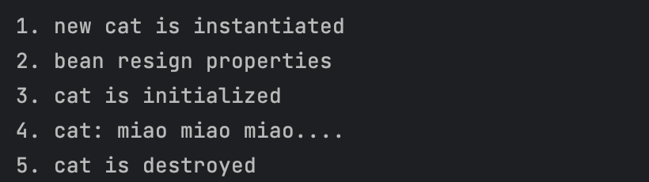
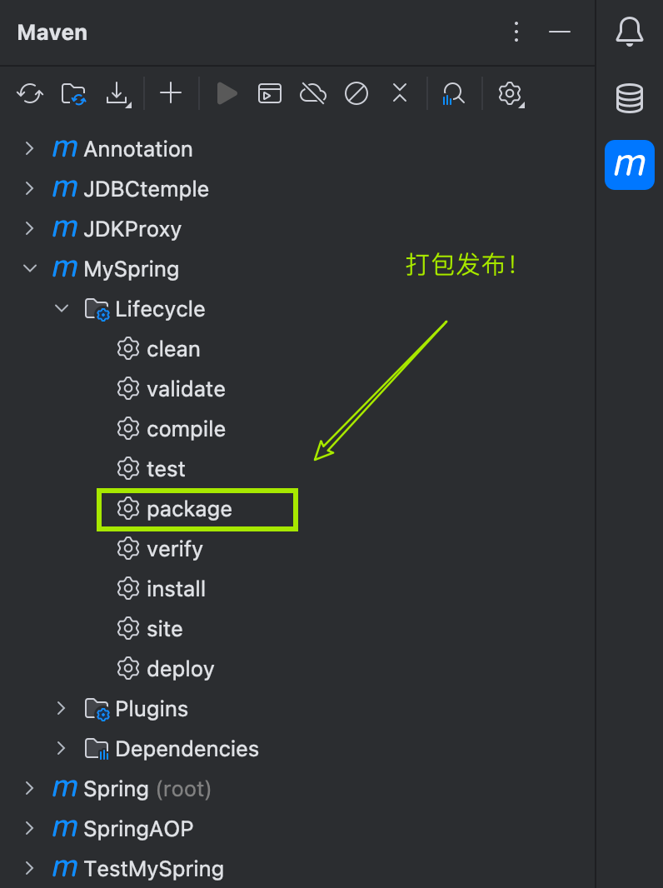
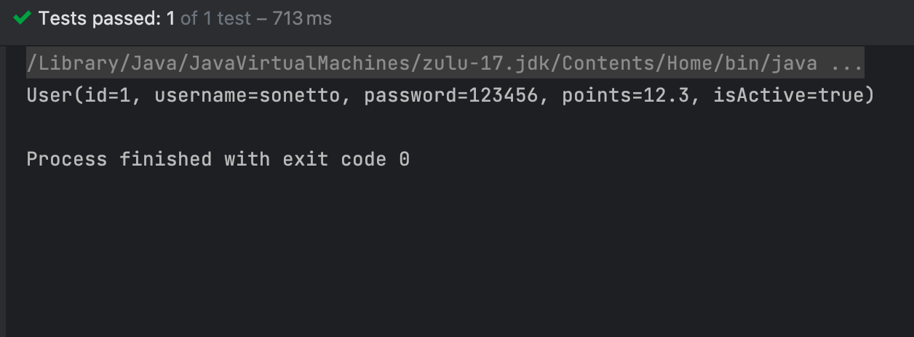

Spring概述
-
Spring框架是Java平台的一个开源的全栈（full-stack）应用程式框架和控制反转容器实现，一般被直接称为Spring。
-
Spring是一个轻量级的控制反转(IoC)和面向切面(AOP)的容器框架。
-
Spring最初的出现是为了解决EJB臃肿的设计，以及难以测试等问题。
-
Spring为简化开发而生，让程序员只需关注核心业务的实现，尽可能的不再关注非业务逻辑代码（事务控制，安全日志等）。
Spring特点
-
轻量
-
- 从大小与开销两方面而言Spring都是轻量的。完整的Spring框架可以在一个大小只有1MB多的JAR文件里发布。并且Spring所需的处理开销也是微不足道的。
- Spring是非侵入式的：Spring应用中的对象不依赖于Spring的特定类。
-
控制反转
-
- Spring通过一种称作控制反转（IoC）的技术促进了松耦合。当应用了IoC，一个对象依赖的其它对象会通过被动的方式传递进来，而不是这个对象自己创建或者查找依赖对象。你可以认为IoC与JNDI相反——不是对象从容器中查找依赖，而是容器在对象初始化时不等对象请求就主动将依赖传递给它。
-
面向切面
-
- Spring提供了面向切面编程的丰富支持，允许通过分离应用的业务逻辑与系统级服务（例如审计（auditing）和事务（transaction）管理）进行内聚性的开发。应用对象只实现它们应该做的——完成业务逻辑——仅此而已。它们并不负责（甚至是意识）其它的系统级关注点，例如日志或事务支持。
-
容器
-
- Spring包含并管理应用对象的配置和生命周期，在这个意义上它是一种容器，你可以配置你的每个bean如何被创建——基于一个可配置原型（prototype），你的bean可以创建一个单独的实例或者每次需要时都生成一个新的实例——以及它们是如何相互关联的。然而，Spring不应该被混同于传统的重量级的EJB容器，它们经常是庞大与笨重的，难以使用。
-
框架
-
- Spring可以将简单的组件配置、组合成为复杂的应用。在Spring中，应用对象被声明式地组合，典型地是在一个XML文件里。Spring也提供了很多基础功能（事务管理、持久化框架集成等等），将应用逻辑的开发留给了你。
所有Spring的这些特征使你能够编写更干净、更可管理、并且更易于测试的代码。它们也为Spring中的各种模块提供了基础支持。
Spring对IOC的实现
-
控制反转（Inversion of Control，IoC）是面向对象编程中的一种设计思想，可以用来降低代码之间的耦合度，符合依赖倒置原则。
控制反转的核心是：将对象的创建权交出去，将对象和对象之间关系的管理权交出去，由第三方容器来负责创建与维护。
控制反转常见的实现方式：依赖注入（Dependency Injection，简称DI）
Spring通过依赖注入的方式来完成Bean管理的。
Bean管理说的是：Bean对象的创建，以及Bean对象中属性的赋值（或者叫做Bean对象之间关系的维护）。
依赖注入：
-
依赖指的是对象和对象之间的关联关系。
-
注入指的是一种数据传递行为，通过注入行为来让对象和对象产生关系。
- 依赖注入常见的实现方式包括两种：set注入 构造注入
set注入
原理：
-
通过
property标签获取到属性名：userDao -
通过属性名推断出set方法名：setUserDao
-
通过反射机制调用setUserDao()方法给属性赋值
property标签的name是属性名。property标签的ref是要注入的bean对象的id。(通过ref属性来完成bean的装配，这是bean最简单的一种装配方式。装配指的是：创建系统组件之间关联的动作)
==set注入的核心实现原理：通过反射机制调用set方法来给属性赋值，让两个对象之间产生关系。==
TeacherService往往需要依赖TeacherMapper/Dao 对象， 为了降低类与类，层与层之间的耦合度，我们通常采用面向接口编程。把对象的创建权交出去，交给Spring容器来管理。由Spring容器来创建对象和维护对象与对象之间的关系。
通过在spring配置文件（如spring-config.xml）中，注册Bean，以及Bean与Bean的关系，Bean的属性值，来让Spring去创建和注入Bean。
<bean id="teacherMapper" class="mapper.teacher.TeacherMapperImpl"></bean> <!-- 基于setter的外部Bean注入--> <!-- <property> 标签内的name属性是对应setter方法的方法名去掉setter，首字母小写--> <!-- 在规范的Bean setter 方法中，这个值就等于Bean的属性名称--> <bean id="teacherService" class="service.teacher.TeacherService"> <property name="teacherMapper" ref="teacherMapper"/> </bean>在这个配置文件中，我们注册了两个Bean，
teacherMapper和teacherService，并通过set注入来给属性负责。public class TestTeacherService { public void testTeacher(){ ApplicationContext applicationContext = new ClassPathXmlApplicationContext("spring.xml"); TeacherService teacherService = applicationContext.getBean("teacherService", TeacherService.class); teacherService.getTeachers(); } }这样，我们就可以通过
applicatContext对象得到，applicationContext对象通过读取配置文件得到。调用
applicatonContext.getBean("Bean id")我们就可以得到实例化的Bean了。构造注入
==通过调用构造方法来给属性赋值。==
<!-- 基于构造方法注入--> <!-- 要求对应Bean中要有对应的构造方法--> <!-- 可以通过<constructor-arg>标签 注入属性值--> <!-- 其中，name属性通过属性名完成注入，值为value--> <!-- index 使用属性值下标完成注入，从0开始--> <bean id="blog" class="bean.Blog"> <constructor-arg name="title" value="unveil a new cd"/> <constructor-arg name="author" value="regulus"/> <constructor-arg name="description" value="new cd"/> <constructor-arg name="id" value="1"/> </bean>
set注入专题
注入外部Bean和内部Bean
<!-- 基于setter的外部Bean注入-->
<!-- <property> 标签内的name属性是对应setter方法的方法名去掉setter，首字母小写-->
<!-- 在规范的Bean setter 方法中，这个值就等于Bean的属性名称-->
<bean id="teacherService" class="service.teacher.TeacherService">
<property name="teacherMapper" ref="teacherMapper"/>
</bean>
<!-- 同样，我们可以基于内部Bean注入-->
<!-- 内部Bean就是在<bean> 标签里嵌套定义的Bean-->
<bean id="teacherService2" class="service.teacher.TeacherService">
<property name="teacherMapper">
<bean id="teacherMapper" class="mapper.teacher.TeacherMapperImpl"></bean>
</property>
</bean>注入简单类型
==如果给简单类型赋值，使用value属性或value标签。而不是ref。==
package bean;
import lombok.Data;
@Data
public class Person {
private String name;
private int age;
private String gender;
}<bean id="person" class="bean.Person">
<property name="age" value="20"/>
<property name="gender" value="female"/>
<property name="name" value="sonetto"/>
</bean简单类型包括哪些呢？
可以通过Spring的源码来分析一下：BeanUtils类
public class BeanUtils{
//.......
public static boolean isSimpleValueType(Class<?> type) {
return (Void.class != type && void.class != type &&
(ClassUtils.isPrimitiveOrWrapper(type) ||
Enum.class.isAssignableFrom(type) ||
CharSequence.class.isAssignableFrom(type) ||
Number.class.isAssignableFrom(type) ||
Date.class.isAssignableFrom(type) ||
Temporal.class.isAssignableFrom(type) ||
URI.class == type ||
URL.class == type ||
Locale.class == type ||
Class.class == type));
}
//........
}通过源码分析得知，简单类型包括：
- 基本数据类型(int,char)
- 基本数据类型对应的包装类(String, Interger)
- String或其他的CharSequence子类
- Number子类
- Date子类
- Enum子类
- URI
- URL
- Temporal子类
- Locale
- Class
- 另外还包括以上简单值类型对应的数组类型。
注入集合数组
数组
package bean;
import lombok.Data;
@Data
public class Article {
private String tags[];
private Person person[];
}<!-- 注入数组-->
<!-- 1. 数组元素是简单类型-->
<bean id="article" class="bean.Article">
<property name="tags">
<array >
<value>mac</value>
<value>c++</value>
<value>app recommend</value>
</array>
</property>
<!-- 数组元素是引用类型-->
<property name="person">
<array>
<ref bean="person"/>
</array>
</property>
</bean>
要点：
- 如果数组中是简单类型，使用value标签。
- 如果数组中是非简单类型，使用ref标签。
集合
import lombok.Data;
import java.util.List;
import java.util.Set;
@Data
public class Library {
private List<Book> bookList;
private List<String> classifications;
private Set<Book> bookSet;
}<!-- 注入集合-->
<bean name="library" class="bean.Library">
<!-- 注入List集合-->
<property name="bookList">
<list>
<bean class="bean.Book">
<property name="bookName" value="爱丽丝梦游仙境"/>
<property name="ISBN" value="1192-2313-31-13"/>
</bean>
<bean class="bean.Book">
<property name="bookName" value="追风筝的人"/>
<property name="ISBN" value="1192-2343-34-33"/>
</bean>
</list>
</property>
<!-- 注入set集合-->
<property name="bookSet">
<set>
<bean class="bean.Book">
<property name="bookName" value="爱丽丝梦游仙境"/>
<property name="ISBN" value="1192-2313-31-13"/>
</bean>
<bean class="bean.Book">
<property name="bookName" value="追风筝的人"/>
<property name="ISBN" value="1192-2343-34-33"/>
</bean>
</set>
</property>
<!-- 注入简单类型 String-->
<property name="classifications">
<array>
<value>小说</value>
<value>教育</value>
</array>
</property>
</bean>注入List集合的时候使用list标签，如果List集合中是简单类型使用value标签，反之使用ref标签。
set集合中元素是简单类型的使用value标签，反之使用ref标签。
map
==使用
package bean;
import lombok.Data;
import java.util.Map;
@Data
public class Color {
private Map<String,String> colorMap;
}<!-- 注入map-->
<bean name="color" class="bean.Color">
<property name="colorMap">
<map>
<entry key="RED" value="255,0,255"/>
<entry key="GREEN" value="0,255,0"/>
<entry key="BLUE" value="0,0,255"/>
</map>
</property>
</bean>注入Propertis
==使用
package bean;
import lombok.Data;
import java.util.Properties;
@Data
public class JDBC {
private Properties properties;
}<!--注入properties-->
<bean name="JDBC" class="bean.JDBC">
<property name="properties" >
<props>
<prop key="DRIVER">com.mysql.jdbc.Driver</prop>
<prop key="URL">jdbc:mysql://localhost:3306/demo?useUnicode=true&characterEncoding=utf-8</prop>
<prop key="USERNAME">root</prop>
<prop key="PASSWORD">password</prop>
</props>
</property>
</bean>注入空字符串和NULL
不注入就是null，空字符串可以设置value=""注入
除此之外，还可以使用<value/>这个自闭和标签注入空字符串，以及使用<null/>标签注入null。
<!--空串的第一种方式-->
<property name="email" value=""/>
<!--空串的第二种方式-->
<property name="email">
<value/>
</property>
<!--注入null-->
<bean id="vipBean" class="com.powernode.spring6.beans.Vip">
<property name="email">
<null/>
</property>
</bean>注入特殊符号
XML中有5个特殊字符，分别是：<、>、'、"、&
以上5个特殊符号在XML中会被特殊对待，会被当做XML语法的一部分进行解析，如果这些特殊符号直接出现在注入的字符串当中，会报错。
解决方案包括两种：
- 第一种：特殊符号使用转义字符代替。
- 第二种：将含有特殊符号的字符串放到： 当中。因为放在CDATA区中的数据不会被XML文件解析器解析。
5个特殊字符对应的转义字符分别是：
| 特殊字符 | 转义字符 |
|---|---|
| > | > |
| < | < |
| ’ | ' |
| " | " |
| & | & |
Bean的实例化方式
-
通过构造方法实例化
-
通过简单工厂模式实例化
-
通过factory-bean实例化
-
通过factoryBean接口实例化
通过构造方法实例化Bean
通过构造方法实例化Bean时，默认情况下Spring会在加载配置文件的时候，也就是我们调用
ApplicationContext applicationContext = new ClassPathXmlApplicationContext("spring.xml");这段代码时，Spring调用目标Bean的无参构造方法实例化Bean。
通过简单工厂模式实例化Bean
在Spring框架中，你可以使用简单工厂模式来实例化Bean。
- 创建一个工厂类，该类负责实例化Bean并返回实例化后的对象。这个工厂类可以是一个普通的Java类，不需要实现特定的接口。
public class BeanFactory {
public static MyBean createBean() {
// 在这里进行实例化Bean的逻辑
MyBean bean = new MyBean();
// 可以进行一些初始化操作
bean.setName("Example Bean");
// 返回实例化后的Bean对象
return bean;
}
}在上面的示例中，MyBean是要实例化的Bean类，你可以根据实际情况替换为你自己的Bean类。在createBean()方法中，你可以根据需要进行Bean的实例化，并对其进行一些初始化操作。
- 在你的Spring配置文件中，可以使用工厂方法来创建Bean的实例。通过在配置文件中声明一个工厂方法，Spring将调用该方法来获取Bean的实例。
<bean id="myBean" class="com.example.BeanFactory" factory-method="createBean" />在上面的示例中，id属性指定了Bean的ID，class属性指定了工厂类的全限定名，factory-method属性指定了工厂类中用于创建Bean实例的方法名。
现在，当Spring容器启动时，它将使用工厂方法来实例化myBean。你可以通过从容器中获取该Bean来使用它。
MyBean bean = (MyBean) applicationContext.getBean("myBean");通过这种方式，你可以使用简单工厂模式来实例化Bean，并将其集成到Spring框架中。
简单工厂模式（Simple Factory Pattern）是一种创建型设计模式，它提供了一种集中化的方法来创建对象，而不需要在客户端代码中直接实例化具体的对象。
简单工厂模式由三个主要组件组成：
- 工厂类（Factory Class）：负责创建对象的类。它包含一个或多个创建对象的静态方法，这些方法根据传入的参数或条件确定要创建的具体对象类型，并返回相应的对象实例。
- 产品类（Product Class）：被工厂类创建的对象。它们共享一个共同的父类或接口，并定义了一组共同的行为和属性。
- 客户端（Client）：使用工厂类创建对象的代码。客户端通过调用工厂类的方法来获取所需的对象，而无需直接实例化具体的产品类。
简单工厂模式的工作原理如下：
- 客户端通过调用工厂类的方法请求创建对象。
- 工厂类根据传入的参数或条件确定要创建的对象类型。
- 工厂类实例化相应的对象，并返回给客户端。
- 客户端使用返回的对象进行后续操作。
简单工厂模式的优点包括：
- 将对象的创建逻辑集中在工厂类中，客户端无需知道具体的对象实现。
- 简化了客户端代码，客户端只需要关注如何使用对象，而不需要关注对象的创建过程。
- 通过工厂类可以轻松添加新的产品类，无需修改客户端代码。
然而，简单工厂模式也有一些局限性：
- 如果需要添加新的产品类，需要修改工厂类的代码，违背了开闭原则。
- 工厂类的职责较重，可能会导致类的职责不够单一。
- 客户端只能通过工厂类提供的方法来创建对象，缺乏灵活性。
简单工厂模式适用于对象的创建逻辑相对简单、对象类型较少且不经常变化的情况。对于复杂的对象创建逻辑或对象类型频繁变化的情况，可以考虑使用其他创建型设计模式，如工厂方法模式或抽象工厂模式。
Bean的生命周期
- 五步
- 实例化Bean。默认使用无参数构造方法new一个Bean
- 注入Bean。通过Settet方法给属性赋值
- 初始化Bean。调用Bean的init方法，这个方法需要程序员自己编写，下destoy方法同。
- 使用Bean。
- 销毁Bean。调用bean的destroy方法。
package bean;
public class Cat {
private String name;
public Cat() {
System.out.println("1. new cat is instantiated");
}
public void miao(){
System.out.println("4. cat: miao miao miao....");
}
public void setName(String name) {
System.out.println("2. bean resign properties");
this.name = name;
}
public void init(){
System.out.println("3. cat is initialized");
}
public void destroy() {
System.out.println("5. cat is destroyed");
}
}<bean name="cat" class="bean.Cat" init-method="init" destroy-method="destroy">
<property name="name" value="Mio"/>
</bean>
-
七步（需要掌握）
- 实例化Bean。默认使用无参数构造方法new一个Bean
- 注入Bean。通过Settet方法给属性赋值
- ==Bean后处理器Before方法执行==
- 初始化Bean。调用Bean的init方法，这个方法需要程序员自己编写，下destoy方法同。==←在这里插入==
- ==Bean后处理器的After方法执行==
- 使用Bean。
- 销毁Bean。调用bean的destroy方法。
在以上的5步中，第3步是初始化Bean，如果你还想在初始化前和初始化后添加代码，可以加入“Bean后处理器”。
编写一个类实现BeanPostProcessor类，并且重写before和after方法：
package bean; import org.springframework.beans.BeansException; import org.springframework.beans.factory.config.BeanPostProcessor; public class PostProcessor implements BeanPostProcessor { @Override public Object postProcessBeforeInitialization(Object bean, String beanName) throws BeansException { System.out.println("------------------------>beforeInitialization"); return BeanPostProcessor.super.postProcessBeforeInitialization(bean, beanName); } @Override public Object postProcessAfterInitialization(Object bean, String beanName) throws BeansException { System.out.println("------------------------>afterInitialization"); return BeanPostProcessor.super.postProcessAfterInitialization(bean, beanName); } }在spring.xml文件中配置“Bean后处理器”：
<!-- 在spring.xml文件中配置“Bean后处理器”：--> <bean class="bean.PostProcessor"/>==一定要注意：在spring.xml文件中配置的Bean后处理器将作用于当前配置文件中所有的Bean。==
-
十步
-
实例化Bean。默认使用无参数构造方法new一个Bean
-
注入Bean。通过Settet方法给属性赋值
-
==检查Bean是否实现了Aware相关接口，并设置相关依赖。==
-
Bean后处理器Before方法执行
-
==检查Bean是否实现了InitializingBean接口 & 调用接口方法。==
-
初始化Bean。调用Bean的init方法，这个方法需要程序员自己编写，下destoy方法同。
-
Bean后处理器的After方法执行
-
使用Bean。
-
==检查Bean是否实现了DisposableBean接口，并调用接口方法==
-
销毁Bean。调用bean的destroy方法。
-
Aware相关的接口包括：BeanNameAware、BeanClassLoaderAware、BeanFactoryAware
- 当Bean实现了BeanNameAware，Spring会将Bean的名字传递给Bean。
- 当Bean实现了BeanClassLoaderAware，Spring会将加载该Bean的类加载器传递给Bean。
- 当Bean实现了BeanFactoryAware，Spring会将Bean工厂对象传递给Bean。
测试以上10步，可以让User类实现5个接口，并实现所有方法：
- BeanNameAware
- BeanClassLoaderAware
- BeanFactoryAware
- InitializingBean
- DisposableBean
Bean的循环依赖问题
Overview
Bean的循环依赖指的是在Spring容器中存在相互依赖的Bean实例。这种循环依赖会导致Bean的创建过程陷入死循环或无法完成，从而导致应用程序无法正常启动或出现其他异常。
循环依赖通常发生在以下情况下：
- 构造函数循环依赖：一个Bean的构造函数参数依赖于另一个Bean，而另一个Bean的构造函数参数又依赖于第一个Bean。这种情况下，当容器尝试实例化其中一个Bean时，它需要先实例化另一个Bean，而后者又依赖于前者，从而导致循环依赖。
- 属性循环依赖：一个Bean的属性依赖于另一个Bean，而另一个Bean的属性又依赖于第一个Bean。这种情况下，当容器尝试为一个Bean注入属性时，它需要先实例化另一个Bean，而后者又依赖于前者，从而导致循环依赖。
Spring框架通过使用三级缓存来解决Bean的循环依赖问题。在实例化Bean的过程中，如果发现循环依赖，Spring会先创建一个尚未完成初始化的早期对象并缓存起来，然后继续完成当前Bean的实例化和初始化。当其他Bean需要访问当前Bean时，将返回该早期对象。待当前Bean初始化完成后，Spring会将其设置到早期对象中，从而解决循环依赖。
然而，需要注意的是，循环依赖可能会导致潜在的问题，如死锁或不确定性状态。因此，应该尽量避免循环依赖的产生，合理设计Bean之间的依赖关系，或者考虑通过重构代码来消除循环依赖。
Spring的三级缓存
Spring为什么可以解决set + singleton模式下循环依赖？
==根本的原因在于：这种方式可以做到将“实例化Bean”和“给Bean属性赋值”这两个动作分开去完成。==
实例化Bean的时候：调用无参数构造方法来完成。此时可以先不给属性赋值，可以提前将该Bean对象“曝光”给外界。
给Bean属性赋值的时候：调用setter方法来完成。
两个步骤是完全可以分离开去完成的，并且这两步不要求在同一个时间点上完成。
也就是说，Bean都是单例的，我们可以先把所有的单例Bean实例化出来，放到一个集合当中（我们可以称之为缓存），所有的单例Bean全部实例化完成之后，以后我们再慢慢的调用setter方法给属性赋值。这样就解决了循环依赖的问题。
那么在Spring框架底层源码级别上是如何实现的呢？请看：
public class DefaultSingletonBeanRegistry extends SimpleAliasRegistry implements SingletonBeanRegistry {
/** Maximum number of suppressed exceptions to preserve. */
private static final int SUPPRESSED_EXCEPTIONS_LIMIT = 100;
// 1. 一级缓存 单例对象缓存池
/** Cache of singleton objects: bean name to bean instance. */
private final Map<String, Object> singletonObjects = new ConcurrentHashMap<>(256);
// 3. 三级缓存 原始对象缓存池
/** Cache of singleton factories: bean name to ObjectFactory. */
private final Map<String, ObjectFactory<?>> singletonFactories = new HashMap<>(16);
// 2. 二级缓存 早期对象缓存池
/** Cache of early singleton objects: bean name to bean instance. */
private final Map<String, Object> earlySingletonObjects = new ConcurrentHashMap<>(16);
}Spring的三级缓存（Three-Level Cache）是Spring框架在处理Bean实例化和循环依赖时使用的一种机制。它是为了解决Bean的循环依赖问题而引入的。
三级缓存在Spring容器的Bean生命周期中扮演重要角色，它包含了以下三个层次的缓存：
-
第一级缓存：单例对象缓存池（Singleton Cache）。
- 第一级缓存是Spring容器中的单例Bean缓存。
- 当Spring容器创建一个单例Bean时，会首先尝试从第一级缓存中获取已经创建的实例。
- 如果能够找到实例，则直接返回给调用者，避免重复实例化相同的单例Bean。
- 第一级缓存的键值对结构为
<Bean名称, Bean实例>。
-
第二级缓存：早期对象缓存池（Early-Stage Object Cache）。
- 第二级缓存用于解决Bean的循环依赖问题。
- 当Bean实例化过程中存在循环依赖时，Spring会将已经创建但尚未完成初始化的Bean对象放入第二级缓存中。
- 早期对象指的是在Bean实例化过程中已经创建出来但尚未完全初始化的对象。
- 通过第二级缓存，Spring能够在后续的Bean初始化阶段中解决循环依赖，将依赖的Bean设置到早期对象中。
- 第二级缓存的键值对结构为
<Bean名称, 早期对象>。
-
第三级缓存：原始对象缓存池（Raw Object Cache）。
-
第三级缓存是最底层的缓存，用于存储尚未经过任何处理的原始Bean对象。
-
当容器创建Bean时，如果无法从第一级和第二级缓存中获取Bean实例，Spring会将正在创建的Bean放入第三级缓存中，作为缓存的最后一道防线。
-
原始对象指的是尚未经过任何处理的初始对象，尚未进行依赖注入等操作。
-
通过第三级缓存，Spring可以确保在解决循环依赖后，将原始对象进行进一步的初始化操作。
-
第三级缓存的键值对结构为
<Bean名称, 原始对象>。
-
在Bean的实例化过程中，Spring框架会依次尝试从三级缓存中获取Bean的实例，以满足依赖注入和循环依赖的需求。这种缓存机制使得Spring能够高效地处理复杂的Bean依赖关系，保证了Bean的正确创建和初始化。
需要注意的是，三级缓存仅在处理单例（Singleton）作用域的Bean时使用，对于其他作用域（如原型Prototype）的Bean，不会使用三级缓存。每次请求原型Bean时，Spring都会创建一个新的实例，避免了循环依赖的问题。
手写Spring框架
Spring底层是通过反射机制来实例化对象，以及属性注入的，在手写Spring框架之前，我们需要了解反射机制。
JAVA反射机制是在运行状态中，对于任意一个类，都能够知道这个类的所有属性和方法；对于任意一个对象，都能够调用它的任意一个方法和属性；这种动态获取的信息以及动态调用对象的方法的功能称为java语言的反射机制。Java反射机制在框架设计中极为广泛，需要深入理解。
通过反射，我们可以拿到类的属性，方法。 回顾Spring框架，我们需要编写一个spring的配置文件例如：spring.xml，在这个配置文件中，我们注册一个类，并注入属性值。
<?xml version="1.0" encoding="UTF-8"?>
<beans>
<beans>
<bean name="user" class="bean.User">
<property name="id" value="1"/>
<property name="username" value="sonetto"/>
<property name="password" value="123456"/>
<property name="points" value="12.3"/>
<property name="isActive" value="true"/>
</bean>
<bean name="userDao" class="bean.UserDao"/>
<bean name="userService" class="bean.UserService">
<property name="userDao" ref="userDao"/>
</bean>
</beans>
</beans>在实例化一个对象时，我们通过ClassPathXmlApplicationContext()，传入我们的配置文件，拿到一个ApplicationContext对象，通过ApplicationContext对象调用getBean（）方法来获取对象, 最终调用对象发方法，来使用Bean。
ApplicationContext context = new ClassPathXmlApplicationContext("mySpring.xml");
User user = (User) context.getBean("user");
System.out.println(user);
UserService userService = (UserService) context.getBean("userService");
userService.createUser();我们的最终目的就是调用对象的方法，而一个指定一个方法需要四要素： 什么对象（对象的全限定类名是什么？）什么方法（方法名），什么参数（参数的类型和数量），返回什么值。
指定来这方法的四个要素，我们就可以唯一的确定一个方法，然后调用该方法。
在spring的配置文件中，注册一个Bean时，我们需要提供这个Bean的全限定类名，也就是Bean标签内的class属性的内容。有了全限定类名，我们就可以通过反射机制调用class.forName()拿到这个对象的类。更进一步，通过这个类拿到构造方法，实例化对象。拿到我们需要的目标方法，最终调用这个目标方法。
有了整个大概的全景图，我们就可以开始编写我们自己的Spring框架了。
- 首先，让我们先编写一个
ApplicationContext接口类，这个类定义了getBean()方法
package org.loulan.spring;
public interface ApplicationContext {
Object getBean(String name);
}- 然后编写该接口的实现类
ClassPathXmlApplicationContext我们正是通过这个类来实例化一个ApplicationContext对象。回顾ApplicationContext context = new ClassPathXmlApplicationContext("mySpring.xml");这段代码，实例化这个类时，我们需要一个参数——Spring配置文件，这个参数对应一个构造方法，所以我们的ClassPathXmlApplicationContext也需要提供这个构造方法。
public ClassPathXmlApplicationContext(String resource) {}-
我们需要读取使用这个框架的配置文件，并拿到所有的Bean标签。要拿到这个xml文件并读取里面的标签已经属性，我们可以借助
SAXReader这个类来完成。通过Maven我们可以轻松的引入这个jar包。同时，我们还需要解析这个xml文件，通过Document来完成。所以我还需要dom4j的依赖。<!-- dom4j依赖--> <dependency> <groupId>org.dom4j</groupId> <artifactId>dom4j</artifactId> <version>2.1.4</version> </dependency> <!-- jaxen的依赖，因为要使用它解析XML文件--> <dependency> <groupId>jaxen</groupId> <artifactId>jaxen</artifactId> <version>2.0.0</version> </dependency>接下来就是愉快的编写代码啦！
package org.loulan.spring; import org.dom4j.Document; import org.dom4j.DocumentException; import org.dom4j.Element; import org.dom4j.Node; import org.dom4j.io.SAXReader; import org.slf4j.Logger; import org.slf4j.LoggerFactory; import java.lang.reflect.Constructor; import java.lang.reflect.Field; import java.lang.reflect.Method; import java.util.HashMap; import java.util.List; import java.util.Map; public class ClassPathXmlApplicationContext implements ApplicationContext{ private Map<String,Object>beans = new HashMap<String,Object>(); private Logger logger = LoggerFactory.getLogger(ClassPathXmlApplicationContext.class); public ClassPathXmlApplicationContext(String resource) { //1. 拿到这个xml配置文件 SAXReader reader = new SAXReader(); Document document = null; try { document = reader.read(ClassLoader.getSystemClassLoader().getResourceAsStream(resource)); // 获取所有的bean标签 List<Node> beanNodes = document.selectNodes("//bean"); // 遍历集合 beanNodes.forEach(beanNode -> { Element beanElt = (Element) beanNode; // 获取id String id = beanElt.attributeValue("name"); // 获取className String className = beanElt.attributeValue("class"); logger.info("id->"+id+" className->"+className); try { //通过反射拿到class Class<?> clazz = Class.forName(className); // 获得class的构造器 Constructor<?> constructor = clazz.getConstructor(); // 实例化对象 Object o = constructor.newInstance(); logger.info("实例化对象->"+o); // 暴露bean，放在map（缓存） beans.put(id,o); } catch (Exception e) { e.printStackTrace(); } }); //再次遍历bean，给属性赋值（DI） beanNodes.forEach(beanNode -> { Element beanElt = (Element) beanNode; // 获取id String id = beanElt.attributeValue("name"); // 获取className String className = beanElt.attributeValue("class"); // 获取实例化对象 Object bean = beans.get(id); logger.info("获取实例化对象"+bean.toString()); //拿到properties List<Node> properties = beanElt.selectNodes("property"); properties.forEach(property ->{ logger.info("获取property-> " + property); Element element = (Element) property; String name = element.attributeValue("name"); String arg = element.attributeValue("value"); String ref = element.attributeValue("ref"); String methodName = "set"+name.toUpperCase().charAt(0)+name.substring(1); logger.info("methodName="+methodName+" arg="+arg); Object actualValue = null; try { //获得属性 Field field = bean.getClass().getDeclaredField(name); Method method = bean.getClass().getMethod(methodName, field.getType()); logger.info("参数类型->"+field.getType().getSimpleName()); if(ref != null){ //如果参数是引用数据类型 method.invoke(bean,beans.get(ref)); } else if( arg != null){ //参数是简单数据类型 switch (field.getType().getSimpleName()){ case "boolean","Boolean": actualValue = Boolean.parseBoolean(arg); break; case "byte","Byte": actualValue = Byte.parseByte(arg); break; case "short","Short": actualValue = Short.parseShort(arg); break; case "int","Integer": actualValue = Integer.parseInt(arg); break; case "long", "Long": actualValue = Long.parseLong(arg); break; case "float","Float": actualValue = Float.parseFloat(arg); break; case "double","Double": actualValue = Double.parseDouble(arg); break; case "char","Character": actualValue = arg.charAt(0); break; case "String": actualValue = arg; break; } method.invoke(bean,actualValue); } } catch (Exception e) { e.printStackTrace(); } }); }); } catch (Exception e) { e.printStackTrace(); } } @Override public Object getBean(String name) { return beans.get(name); } }
代码很长，别急我们一步步分析：
这段代码做三件事：
-
通过
document = reader.read(ClassLoader.getSystemClassLoader().getResourceAsStream(resource));拿到配置文件。 -
拿到所以的bean标签,获取标签的name属性和和class属性值，name属性值是这个bean的id，class是这个类的全限定类名。
-
通过反射机制实例化对象，并放到map集合中。
这一步相当于把bean放入二级缓存中，提前暴露bean。map集合就是二级缓存，其中key存放对象的name或id，value存放这个实例化的对象。
//1. 拿到这个xml配置文件
SAXReader reader = new SAXReader();
Document document = null;
try {
document = reader.read(ClassLoader.getSystemClassLoader().getResourceAsStream(resource));
// 获取所有的bean标签
List<Node> beanNodes = document.selectNodes("//bean");
// 遍历集合
beanNodes.forEach(beanNode -> {
Element beanElt = (Element) beanNode;
// 获取id
String id = beanElt.attributeValue("name");
// 获取className
String className = beanElt.attributeValue("class");
logger.info("id->"+id+" className->"+className);
try {
//通过反射拿到class
Class<?> clazz = Class.forName(className);
// 获得class的构造器
Constructor<?> constructor = clazz.getConstructor();
// 实例化对象
Object o = constructor.newInstance();
logger.info("实例化对象->"+o);
// 暴露bean，放在map（缓存）
beans.put(id,o);
} catch (Exception e) {
e.printStackTrace();
}
});实例化bean之后，接下里就是依赖注入了（Dependency Injection）。我们需要再次遍历每一个bean节点，一个bean节点相当于一个bean对象。对于每一个bean对象，再次遍历bean对象的
这时候就是调用对象的set方法了，还记得调用方法的四要素吗？没错，我们需要方法所属的对象，方法名，方法参数，以及返回值类型。
其中，对象我们可以通过二级缓存拿到，也就是上一部分的map集合。方法参数也是属性值，在property标签的value属性值指明。返回值就更轻松了，set方法的返回值都是void。
那么剩下的，就是方法名了，按照Java命名规范规范，set方法名有set加上属性名的首字母大小组成，符合驼峰命名规范。我们拿到了属性值，就可以通过拼接字符串的方法来得到方法名。
但是还有一个问题，属性值有普通类型和引用类型两种，对应引用类型，我们的做法很简单，通过二级缓存拿到引用对象，再通过set方法注入就好啦。但是普通类型就比较麻烦了。
首先，普通类型太多，而我们从配置文件中拿到的数据都是字符串类型，如果目标属性是String类型的话很直接，直接调用set方法即可。但是如果属性类型是int类型，或者bool类型，我们就需要把String类型转换成对应的类型。
好在这些普通类都有对应的包装类型，通包装类型我们可以轻松的实现字符串类型的转换，所以我们需要的就是匹配每一个普通类型，对这样的类型做类型转换即可。
普通类型太多，出于学习的目的，假设我们的Spring框架只支持其中部分类型。
//再次遍历bean，给属性赋值（DI）
beanNodes.forEach(beanNode -> {
Element beanElt = (Element) beanNode;
// 获取id
String id = beanElt.attributeValue("name");
// 获取className
String className = beanElt.attributeValue("class");
// 获取实例化对象
Object bean = beans.get(id);
logger.info("获取实例化对象"+bean.toString());
//拿到properties
List<Node> properties = beanElt.selectNodes("property");
properties.forEach(property ->{
logger.info("获取property-> " + property);
Element element = (Element) property;
String name = element.attributeValue("name");
String arg = element.attributeValue("value");
String ref = element.attributeValue("ref");
String methodName = "set"+name.toUpperCase().charAt(0)+name.substring(1);
logger.info("methodName="+methodName+" arg="+arg);
Object actualValue = null;
try {
//获得属性
Field field = bean.getClass().getDeclaredField(name);
Method method = bean.getClass().getMethod(methodName, field.getType());
logger.info("参数类型->"+field.getType().getSimpleName());
if(ref != null){
//如果参数是引用数据类型
method.invoke(bean,beans.get(ref));
} else if( arg != null){
//参数是简单数据类型
switch (field.getType().getSimpleName()){
case "boolean","Boolean": actualValue = Boolean.parseBoolean(arg); break;
case "byte","Byte": actualValue = Byte.parseByte(arg); break;
case "short","Short": actualValue = Short.parseShort(arg); break;
case "int","Integer": actualValue = Integer.parseInt(arg); break;
case "long", "Long": actualValue = Long.parseLong(arg); break;
case "float","Float": actualValue = Float.parseFloat(arg); break;
case "double","Double": actualValue = Double.parseDouble(arg); break;
case "char","Character": actualValue = arg.charAt(0); break;
case "String": actualValue = arg; break;
}
method.invoke(bean,actualValue);
}
} catch (Exception e) {
e.printStackTrace();
}最后，提供一个getBean方法的接口，用于活动实例化的bean
@Override
public Object getBean(String name) {
return beans.get(name);
}到这里，我们的Spring框架就算编写完了，打包发布吧！
测试自己的Spring框架
创建一个Maven模块，并引入刚刚打包好的jar包吧
<dependency>
<groupId>cn.loulan</groupId>
<artifactId>MySpring</artifactId>
<version>1.0-SNAPSHOT</version>
</dependency>首先，我们需要一个Bean类
package bean;
import lombok.Data;
@Data
public class User {
private int id;
private String username;
private String password;
private float points;
private boolean isActive;
public void setIsActive(boolean active) {
isActive = active;
}
}
然后是Spring配置文件
<?xml version="1.0" encoding="UTF-8"?>
<beans>
<beans>
<bean name="user" class="bean.User">
<property name="id" value="1"/>
<property name="username" value="sonetto"/>
<property name="password" value="123456"/>
<property name="points" value="12.3"/>
<property name="isActive" value="true"/>
</bean>
<bean name="userDao" class="bean.UserDao"/>
<bean name="userService" class="bean.UserService">
<property name="userDao" ref="userDao"/>
</bean>
</beans>
</beans>编写测试类：
package bean;
import org.junit.Test;
import org.loulan.spring.ApplicationContext;
import org.loulan.spring.ClassPathXmlApplicationContext;
import org.springframework.beans.factory.support.DefaultSingletonBeanRegistry;
public class TestBean {
@Test
public void test(){
ApplicationContext context = new ClassPathXmlApplicationContext("mySpring.xml");
User user = (User) context.getBean("user");
System.out.println(user);
}
}
跑起来了！
Spring 集成MyBatis框架
Overview
-
需要的依赖
- Spring-context(关联引入Spring-aop)
- Spring-MyBatis（Spring 集成MyBatis）
- Mysql-connetor(Mysql驱动)
- Spring-jdbc（链接数据库）
- MyBatis
- Junit（单元测试）
- druid(数据源)
- Lombok
-
配置数据库
- account表，字段act_no,banlance
-
项目结构搭建
-
Bean(pojo)
- Account
-
mapper
- AccountMapper
- AccountMapper.xml
-
Service
- AccountService
- AccountServiceImpl
-
resources
-
Spring核心配置文件Spring.xml
- 组建扫描
- 事务管理器
-
MyBatis核心配置文件MyBatis.xml
- 注册Mapper
- 类别名
- 设置日志实现
-
- 该文件可以没有，大部分的配置可以转移到spring配置文件中。
- 如果遇到mybatis相关的系统级配置，还是需要这个文件。
-
DB.propertis
- Driver→com.mysql.jdbc.Driver
- url→jdbc:mysql://localhost:3307/class?useUnicode=true&characterEncoding=utf-8
- username→root
- Password→root
-
编写测试类
-
-
编写mapper
package cn.loulan.mapper;
import cn.loulan.bean.Account;
import java.util.List;
public interface AccountMapper {
int insert(Account account);
int delete(String actNo);
int update(Account account);
Account getById(String actNo);
List<Account> getAll();
}<?xml version="1.0" encoding="UTF-8" ?>
<!DOCTYPE mapper
PUBLIC "-//mybatis.org//DTD Mapper 3.0//EN"
"https://mybatis.org/dtd/mybatis-3-mapper.dtd">
<mapper namespace="cn.loulan.mapper.AccountMapper">
<insert id="insert">
Insert into account values(#{actNo},#{balance})
</insert>
<update id="update" parameterType="Account">
update account set balance = #{balance} where act_no = #{actNo}
</update>
<delete id="delete" >
delete account where act_no = #{actNo};
</delete>
<select id="getById" resultType="Account">
select * from account where act_no =#{actNo}
</select>
<select id="getAll" resultType="Account">
select * from account;
</select>
</mapper>Service
package cn.loulan.service;
import cn.loulan.bean.Account;
import java.util.List;
public interface AccountService {
boolean save(Account account);
boolean delete(String actNo);
boolean modify(Account account);
Account getById(String actNo);
List<Account> getAllAccounts();
boolean transaction(String from, String to,double amount);
}package cn.loulan.service;
import cn.loulan.bean.Account;
import cn.loulan.mapper.AccountMapper;
import lombok.Data;
import org.springframework.beans.factory.annotation.Autowired;
import org.springframework.stereotype.Service;
import org.springframework.transaction.annotation.Transactional;
import java.util.List;
@Service("accountService")
@Transactional
public class AccountServiceImpl implements AccountService {
private AccountMapper accountMapper;
@Autowired
public void setMapper(AccountMapper mapper) {
this.accountMapper = mapper;
}
@Override
public boolean save(Account account) {
accountMapper.insert(account);
return true;
}
@Override
public boolean delete(String actNo) {
accountMapper.delete(actNo);
return true;
}
@Override
public boolean modify(Account account) {
accountMapper.update(account);
return false;
}
@Override
public Account getById(String actNo) {
return accountMapper.getById(actNo);
}
@Override
public List<Account> getAllAccounts() {
return accountMapper.getAll();
}
@Override
public boolean transaction(String from, String to, double amount) {
Account fromAccount = accountMapper.getById(from);
Account toAccount = accountMapper.getById(to);
if(fromAccount.getBalance() < amount) {
throw new RuntimeException("余额不足");
}
fromAccount.setBalance(fromAccount.getBalance() - amount);
toAccount.setBalance(toAccount.getBalance() + amount);
int count = accountMapper.update(fromAccount);
count += accountMapper.update(toAccount);
if (count != 2) throw new RuntimeException("异常");
return count == 2 ? true : false;
}
}resources
数据配置文件
#DRIVER=com.mysql.jdbc.Driver
DRIVER=com.mysql.cj.jdbc.Driver
URL=jdbc:mysql://localhost:3306/demo?useUnicode=true&characterEncoding=utf-8
USERNAME=root
PASSWORD=rootMyBatis核心配置文件：
<?xml version="1.0" encoding="UTF-8" ?>
<!DOCTYPE configuration
PUBLIC "-//mybatis.org//DTD Config 3.0//EN"
"https://mybatis.org/dtd/mybatis-3-config.dtd">
<configuration>
<!--日志实现-->
<settings>
<setting name="logImpl" value="STDOUT_LOGGING"/>
</settings>
<typeAliases>
<typeAlias alias="Account" type="cn.loulan.bean.Account"/>
</typeAliases>
</configuration>Spring核心配置文件
<?xml version="1.0" encoding="UTF-8"?>
<beans xmlns="http://www.springframework.org/schema/beans"
xmlns:xsi="http://www.w3.org/2001/XMLSchema-instance"
xmlns:context="http://www.springframework.org/schema/context" xmlns:tx="http://www.springframework.org/schema/tx"
xsi:schemaLocation="http://www.springframework.org/schema/beans http://www.springframework.org/schema/beans/spring-beans.xsd http://www.springframework.org/schema/context https://www.springframework.org/schema/context/spring-context.xsd http://www.springframework.org/schema/tx http://www.springframework.org/schema/tx/spring-tx.xsd">
<!--开启组件自动扫描-->
<context:component-scan base-package="cn.loulan.service"/>
<!-- 加载数据库配置文件-->
<context:property-placeholder location="DB.properties"/>
<!-- 配置数据源-->
<bean id="dataSource" class="com.alibaba.druid.pool.DruidDataSource">
<property name="driverClassName" value="${DRIVER}"/>
<property name="url" value="${URL}"/>
<property name="username" value="${USERNAME}"/>
<property name="password" value="${PASSWORD}"/>
</bean>
<!--Mapper扫描器-->
<bean class="org.mybatis.spring.mapper.MapperScannerConfigurer">
<property name="basePackage" value="cn.loulan.mapper"/>
</bean>
<!--SqlSessionFactoryBean-->
<bean class="org.mybatis.spring.SqlSessionFactoryBean">
<!--mybatis核心配置文件路径-->
<property name="configLocation" value="mybatis.xml"/>
<!--注入数据源-->
<property name="dataSource" ref="dataSource"/>
<!--起别名-->
<property name="typeAliasesPackage" value="cn.loulan.bean"/>
</bean>
<!--事务管理器-->
<bean id="txManager" class="org.springframework.jdbc.datasource.DataSourceTransactionManager">
<property name="dataSource" ref="dataSource"/>
</bean>
<!--开启事务注解-->
<tx:annotation-driven transaction-manager="txManager"/>
</beans>编写测试类
package cn.loulan.service;
import cn.loulan.bean.Account;
import cn.loulan.mapper.AccountMapper;
import cn.loulan.util.MybatisUtil;
import org.apache.ibatis.session.SqlSession;
import org.junit.Test;
import org.springframework.context.ApplicationContext;
import org.springframework.context.support.ClassPathXmlApplicationContext;
import java.util.List;
public class ServiceTest {
@Test
public void mapper(){
SqlSession sqlSession = MybatisUtil.getSqlSession();
AccountMapper mapper = sqlSession.getMapper(AccountMapper.class);
// mapper.insert(new Account("123",500.00));
mapper.insert(new Account("234",500.00));
sqlSession.commit();
sqlSession.close();
}
@Test
public void testSpring()throws Exception {
ApplicationContext applicationContext = new ClassPathXmlApplicationContext("spring.xml");
AccountService accountService = applicationContext.getBean("accountService", AccountService.class);
List<Account> allAccounts = accountService.getAllAccounts();
allAccounts.forEach(account ->{
System.out.println(account);
});
}
@Test
public void testTransaction(){
ApplicationContext applicationContext = new ClassPathXmlApplicationContext("spring.xml");
AccountService accountService = applicationContext.getBean("accountService", AccountService.class);
accountService.transaction("1","234",100);
}
}总结
配置文件还是要写好多，而且完全靠记忆嘛。简单整理一下这些配置文件，主要分为两部分，spring的配置文件和mybatis的配置文件。spring配置文件中主要的配置有：
- 注册bean，在用注解开发时开启组建自动扫描
- 加载数据库配置文件。
- 配置数据源。包括数据库的一下配置信息，驱动器啊url之类的。
- Mapper扫描器。相当于在mybatis中注册mapper，使用包名扫描这个包下的所有mapper。
- 配置sqlSessionFactoryBean在这个bean中价值mybatis的核心配置文件，以及价值数据源，类型别名等等可以在mybatis中配置的内容都可以通过这个bean来配置。
- 配置事务管理器
- 开启事务注解
这样在MyBatis配置文件的内容就少很多了，甚至可以不配或者没有。这个案例中，我们配置了日志实现和类型别名。
感觉好乱，课程的这一段讲得太快了，老杜是不是赶着吃饭啊。
Spring框架下的mybatis还是和直接用mybatis有很大区别。Spring中，我们不需要一个工具类用于价值mybatis配置文件以便获取sqlsession对象了。事务的处理也不需要管了，虽然简化了很多代码，但是总有一种项目莫名其妙就跑起来的感觉，终极还是我了解得不够多了吧。